I’m a designer, thinker and a maker, passionate about moving people from noticing to engaging differently with what’s already around them: the relationships, rituals and ordinary days they walk past.
I take a project from research to a working prototype, physical or digital, and test it with people before I call it done.
A Chinese herbal cabinet keeps a drawer for every root, seed and petal. This one holds fifty. Open the drawers, brew three into something, or let it tell you which herb you are.
01Open the drawersFifty herbs, seven chapters, one at a time.
02Brew somethingPick three. The pot tells you what you made.
03Which herb are you?A short reading that ends in a drawer.
Questions I don’t have answers to yet. The list keeps growing.
Open questionsProcess01 / 06
Hi, I’m Ying!
I’m an interaction designer based in Brooklyn, originally from Taiwan, with an MFA in Interaction Design from SVA.
I started in communication design, building installations with sensors and Arduino. Now I work across UX research, interaction and UI design, and prototypes in code, from first interviews to something people can hold and use. Lately: AI products and multi-agent systems.
I care about the moments people already have in their day, and I design products around them: the rituals people already have.
Drive a weekly research cadence of usability tests and interviews that informs product strategy, centered on onboarding for a multi-agent AI product.
MFA, Interaction DesignSchool of Visual Arts, New York2024 – 2026
Thesis work on time as a design material, including MiMo, which turns a time difference into a reason for families to reach each other. Team projects in perinatal care, service design and physical computing.
What I do
Research
Interviews & co-design
Usability testing
Synthesis into decisions
Design
Interaction & flows
UI & visual systems
Phygital & service design
Build
Hi-fi prototypes in code
AI & multi-agent prototypes
Physical prototypes
Alwaysopentocollaborate.
And open to full-time product & interaction design roles.
Let Brooklyn’s 2 p.m. arrive at Taipei’s 2 p.m. The time difference stops being a cost and becomes the reason to reach out.
MIMOMiMoProduct & Interaction Design
A time portal for families whose days no longer overlap.
I ran the user research and designed MiMo end to end, from the first interview to a hi-fi working prototype: an asynchronous sharing experience for families living across distance. At its centre is Mirror Moment, which holds a sent piece until the receiver reaches the same point in their own day, so two people meet a moment from the same place in their day, and are more present to each other between visits.
Role
Product Designer & Researcher
5 participants · 6 sessions
Concept
Interaction design
Hi-fi prototype
Skills
Research
Interviews & co-creation
Research synthesis
Affinity mapping
Usability planning
Design
Interaction design
UI & visual design
Design system
Content design
Build
Vibe coding
Prototyping in HTML
One mechanism, three interactions.
Imagine your morning reaching their morning, an ocean away. MiMo lets two people live each other’s days, each in their own rhythm. I designed all three layers of it: 1how a moment is prepared, 2when it arrives, and 3what it becomes over time.
The decision the project turned on: carry the position in someone’s day, not the moment itself.
Gathering her Tuesday…
Today’s collection
Two pieces leave tonight for Mom
1 photo · 1 songTUE15
Bread still warm
her 1:15 PM
Photo
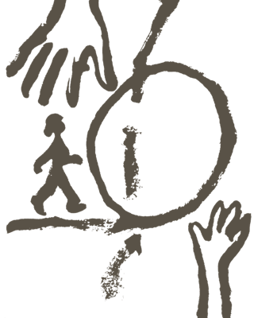
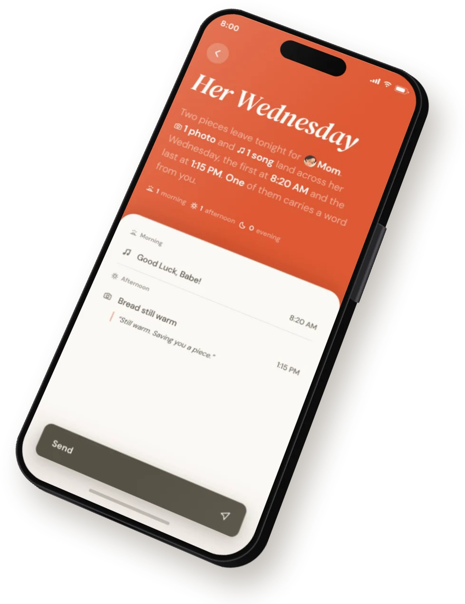
Saving you a piece.
MIMO
Good Luck, Babe!Chappell Roanlands her 8:20 AM
Send to
Mom, Taipei
MIMOMiMoBon voyage!
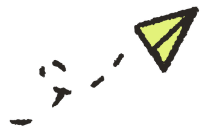
2 PIECES ON THEIR WAY
Landing at her 8:20…
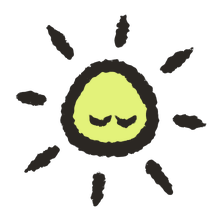
MiMo · now
Ying left you her 8:20 AM
Brooklyn · 18°C, sunnyWED16
Good Luck, Babe!
Chappell Roan
1:12
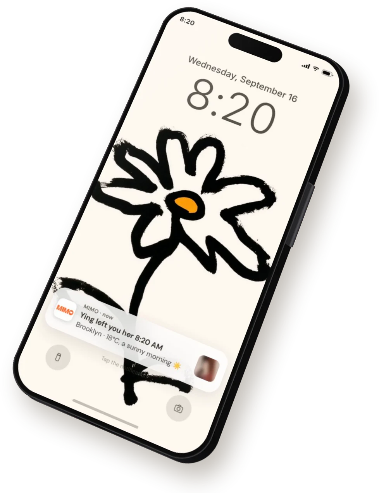
Right at breakfast.
MIMO🥹
Bread still warmwith a word from Yinglands her 1:15 PM
On the way
Five more today
next 11:04 AM
Momreacted 🥹
SAME HOUR, HER DAY
Keeping a year of us…
Dear Ying,
Is the radiator on yet over there?
Lands her 8:00 AMSEP16
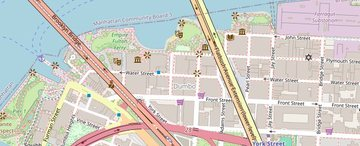
Dihua St
your 2:40 PM
Places 21
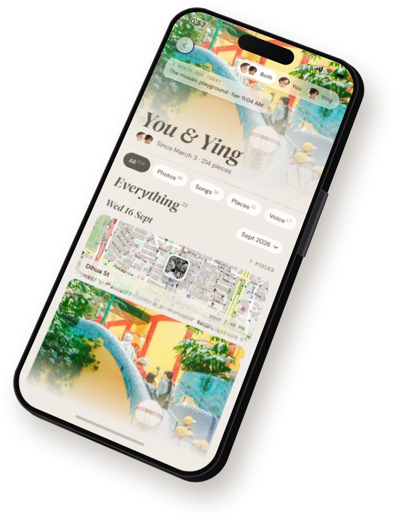
214 pieces since March.
MIMO
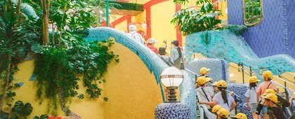
The mosaic playgrounda month ago todayher 11:04 AM
Morning walk
3,180 steps
MomSteamed it, see?
38 SONGS · 21 PLACES
scroll or tap
Love arrives at the wrong hour.
You do the time-zone math, and still call at the wrong hour. You wake up to a missed call from Mom, and before coffee you already owe her a reply, while the day here is already waiting for you.
In 2024, 304 million people lived outside their country of birth. Across five adult children in three host countries, the hours between them shaped how every call felt. That same gap can feel like pressure or like room, and over the years it shapes how parents and children feel about each other.
HOW MIGHT WE Reimagine the time difference as room to share and respond, so that over time it becomes part of how parents and adult children stay close?
How I listened
01InterviewsFive adult children, each with parents in another country, talking across the time difference.
“I’ve waited for phone calls many times. Sometimes all that matters is just to hear her voice.”
Parent
“I want it to stay flat. I don’t want them to know how happy or sad I am.”
Adult child
“I called when she was still in class, many times.”
Parent
“It’s not like I don’t want to reach out to them. I don’t know what to say sometimes.”
Adult child
“I feel like what I say can easily create pressure, so I’m quite careful when we get to talk on the phone.”
Parent
“Because of the distance we have now, I have more control over what and when I share with my parents. I’m quite happy with it.”
Adult child
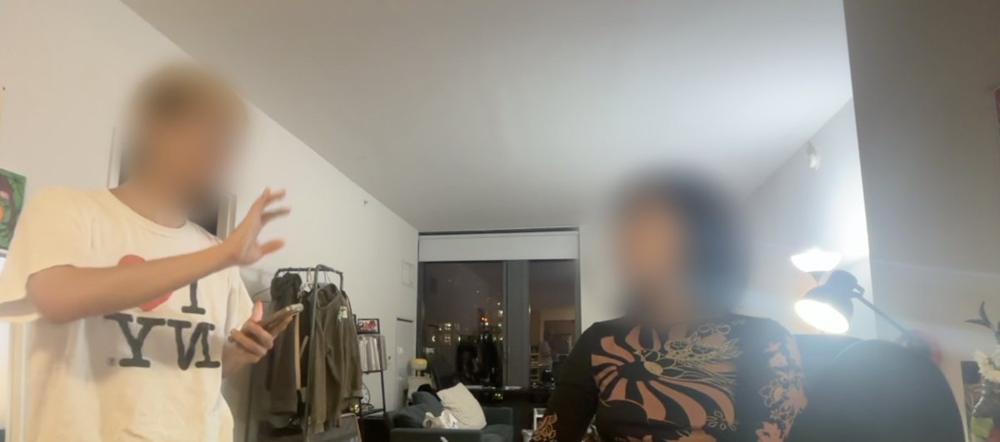
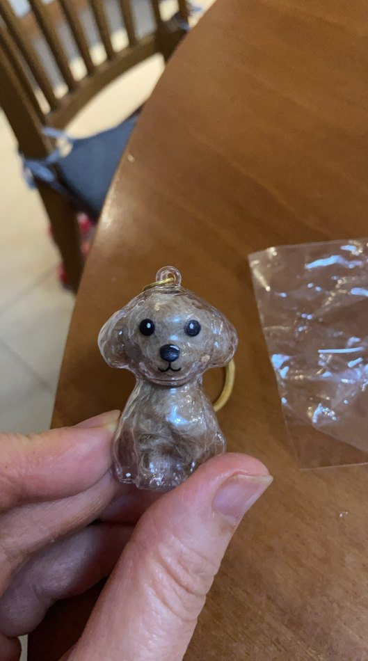
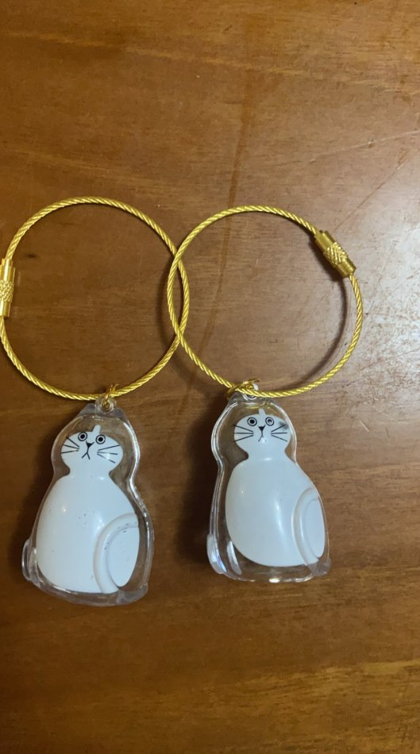
Keychains made from the family pet’s fur, kept by a parent for the children abroad.
My father keeping silent the entire call, as he always does.
Seeing my cat.
My father knowing about OpenClaw.
My mother talking to me about my thesis and AI, even though she is 70.
One participant’s moments, in their words
02Probe + co-creationBefore the session, each participant collected three moments that made them smile while keeping in touch. Together we acted them out and sketched what could carry more of them.
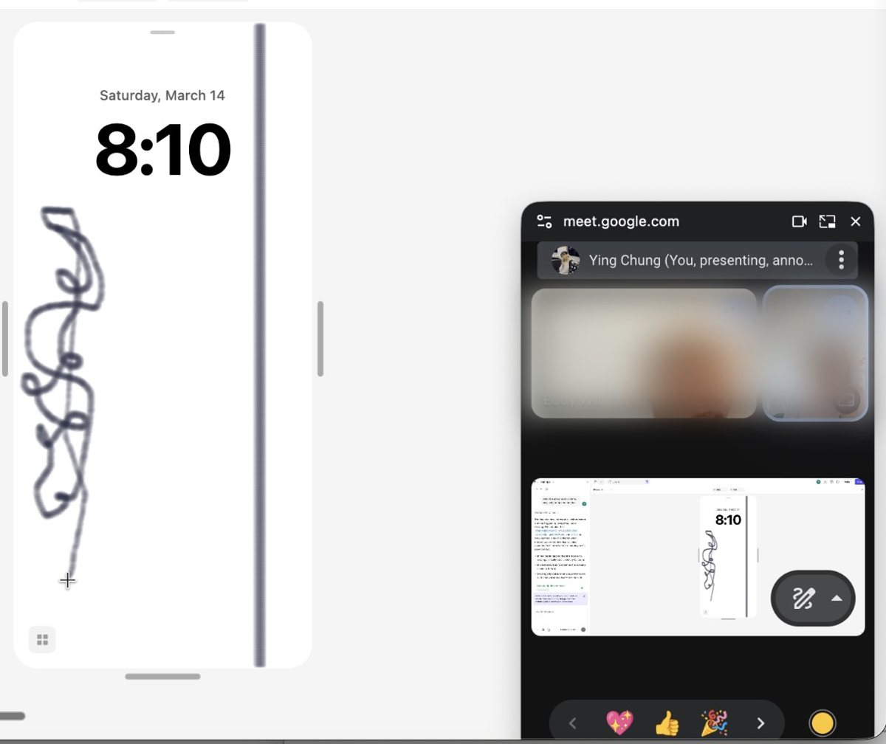
03Prototype sessionsRemote sessions on an early lock-screen prototype, drawing on it together.
Sharing and receiving should both feel easy, intentional, and pressure-free.
What research showed
Insight 01
Wanting to share isn’t the hard part. Starting is.
“It’s not like I don’t want to reach out to them. I don’t know what to say sometimes.”
So MiMo · PrepareToday’s Collection. Gather small pieces of your day as it happens, so there’s always something ready to send.
Insight 02
Information without capacity lands as weight.
People reach out with what they know the other can help with, or cope with. Creating that space matters.
So MiMo · AskAsk the one who knows. Each person’s card shows what they’re good at, so a question goes to someone who can actually help.
Insight 03
Timing matters more than getting in touch.
Participants timed calls to when a parent would be awake. A parent still said: “I called when she was still in class, many times.”
So MiMo · ArriveMirror Moment. A piece waits, then lands at the same hour in her day.
Insight 04
Calls catch up on news, not on change.
Two timelines run at different speeds. No single call shows how far apart they’ve drifted.
So MiMo · KeepCollection with Mom. Both timelines build up in one place, so the drift becomes something to see and talk about.
Where it landed, and where it didn’t.
“Many of my friends and relatives live in different countries. This is quite thoughtful.”
— a dad
“It feels like leaving a Post-it for my mom when I was little. It’s nice.”
— a daughter, far from mom
“I’m a collector anyway, so getting them one by one, each at its own time… I’d want to keep every one.”
— a collector at heart
“I do feel it’s easier to share, because the piece won’t be delivered instantly.”
— a son, sending home
Where it got confusing
“Ask is where I got confused. It’s nice knowing what I can ask, but once I know, I just want to ask them now.”
— a tester, on Ask
“In the collection, I was hoping to feel the moments being honored as they build up over time. I’m not feeling that yet.”
— a tester, on Keep
What I’d change, and what I learned.
Feedback already moved the design. Testers liked knowing what they could ask, but once they knew, they wanted to ask now. So Ask now has a “Send now” option for what can’t wait for the other person’s morning.
Keep doesn’t honor time yet. One tester wanted the collection to feel like moments building up. That’s the next thing to design: making a month of pieces feel earned, not just stored.
Still open. Should a reaction wait for a mirrored moment too, or land at once? And all five participants read their parents by body: hair, eyes, a grandmother visibly older. MiMo carries no sense of that yet.
What I’m taking with me. Delay isn’t something to engineer away. Given the right shape, it gives people room to say more.
Beyond families. The same gap shows up anywhere people share a relationship but not a clock: partners in long-distance relationships, remote teams spread across time zones, even astronauts, whose messages from Mars would take minutes to arrive. MiMo’s idea travels with them: don’t erase the distance, let each moment land at the right hour.
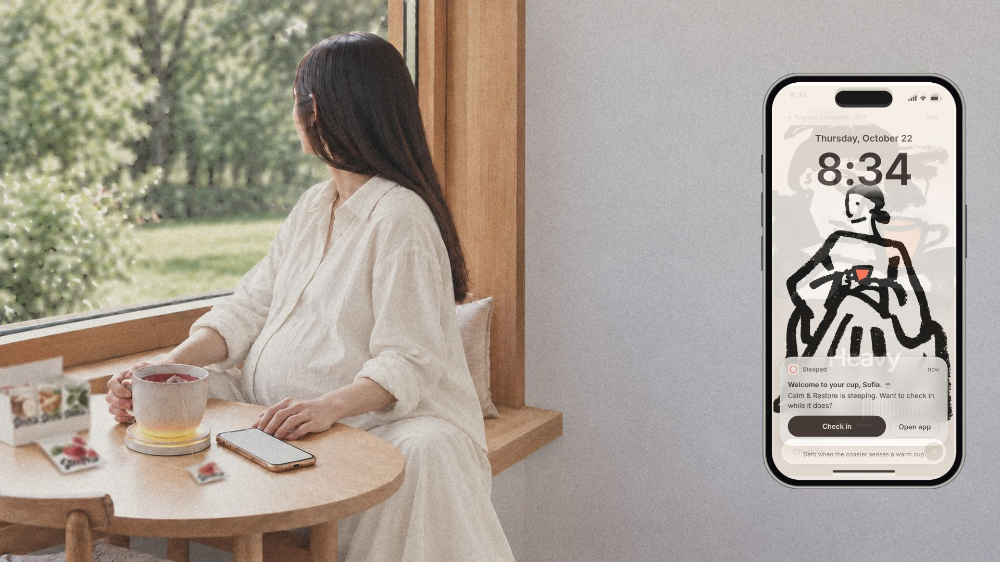
Steeped
For the months around birth, when support has to ask for almost nothing.
Draft · copy and images in progress
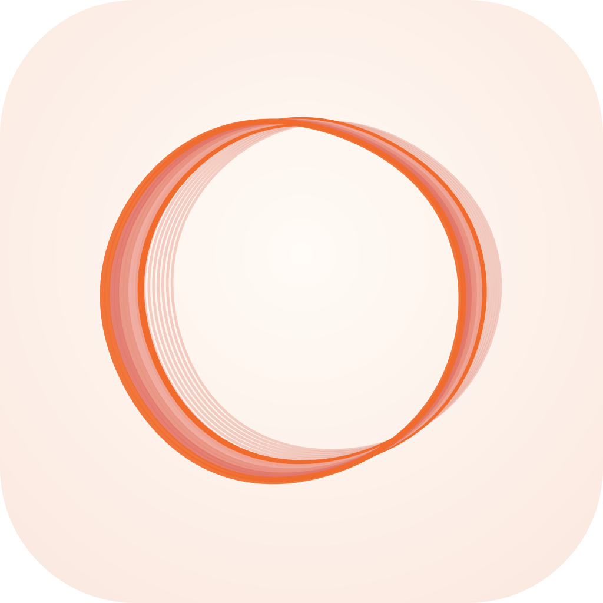
SteepedPhygital Service & Interaction Design · Team project
Support that lasts as long as her cup of tea.
Steeped is a smart coaster and app for moms in the months around birth. Support here asks for time she has little of, so Steeped lives inside a cup of tea: it opens as she settles in and winds down as the cup empties. On a team of four, I led the app design and ran our roadmap.
Role
App Design Lead · Team of 4
Team · Ying Chung, Atisha, Jeremie, Sihan
2 single moms as co-designers · 2 experts
Research (team)
Concept (team)
Roadmap & docs
App design lead
Skills
Research
Expert interviews
Co-design with moms
Usability testing
Design
Interaction design
UI & visual design
Phygital system
Build
Coaster prototype
Prototyping in HTML
A simple ritual for a big transition.
About 1 in 5 women have a depressive episode in the three months after birth. For many of them, loneliness sits at the center. Most support on offer asks for what she has least: time, attention, one more app to learn.
Steeped starts inside a pause she already takes. A cup of tea needs no new habit, and the app unfolds only while it lasts: a check-in as it steeps, other moms at halfway, a quiet wrap-up at the last sips.
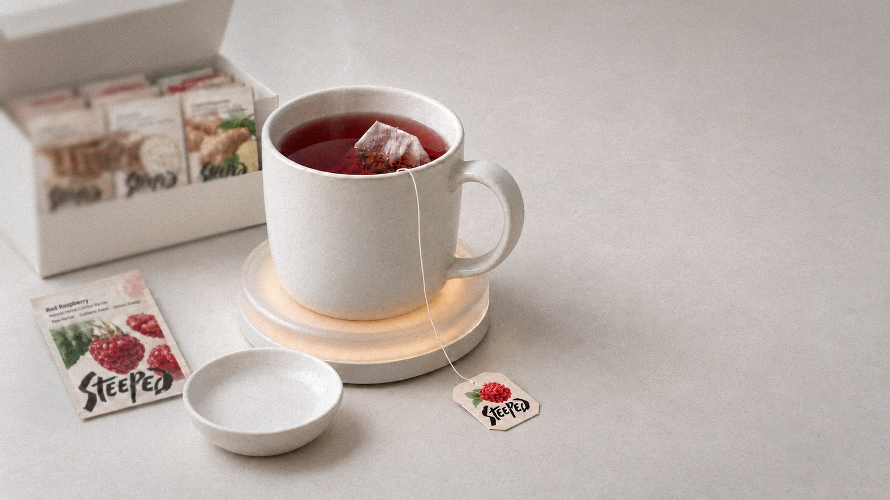
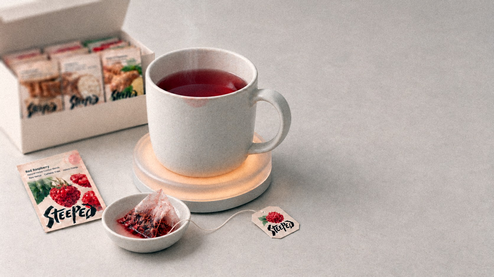
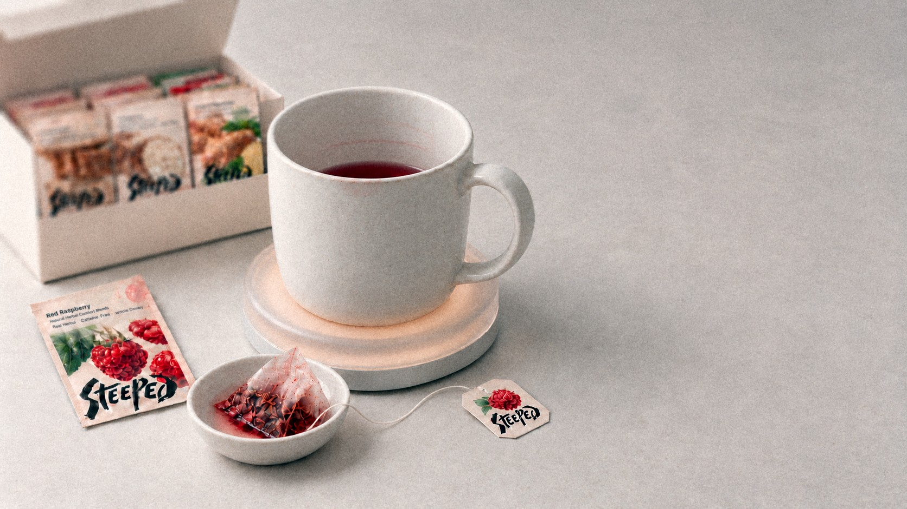
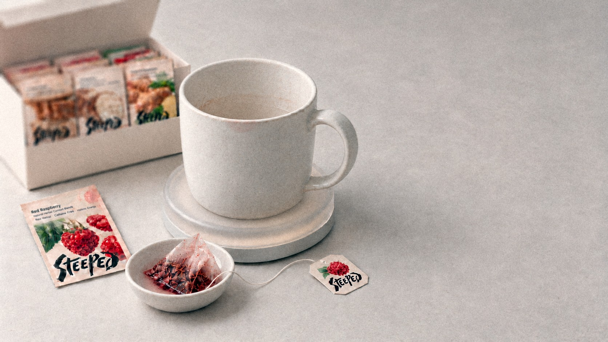
Drag to drink · 240 ml left
STEEPEDnow
FullEmpty
We started with single moms.
Single moms hold every role at once. Our desk research and forum reading kept surfacing the same pressures: money, time, housing, childcare. Self-care came last, and often came with guilt.
HOW MIGHT WE Design to support single moms’ well-being?
How we listened
01 Desk research
Forums, articles and an ecosystem map of what single motherhood touches: money, time, housing, childcare, motivation.
02 Two co-designers
Donna, a single mom of three in Queens, and Ruei, a single mom raising a teenage son in Taipei.
03 Co-design sessions
Mom Perspectacle let each mom tell her own story of motherhood. A collage let her show it, with prompts like “What helps me feel okay, even on hard days?”
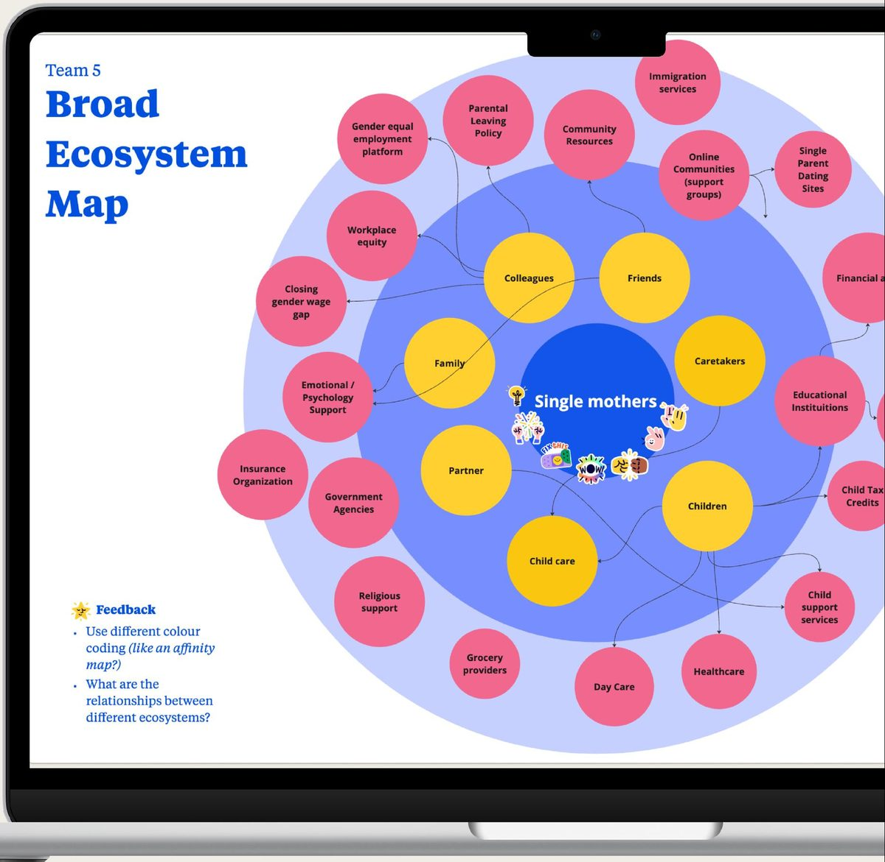
01The ecosystem map from desk research.
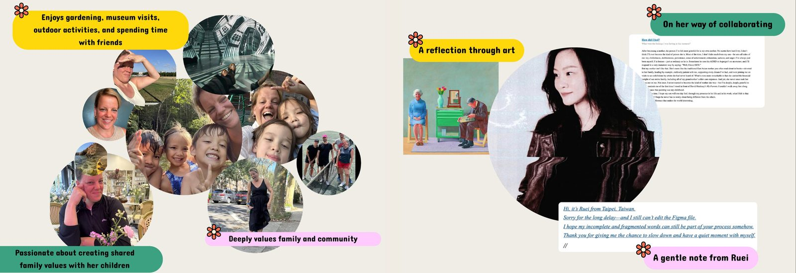
02Meeting Donna and Ruei. Ruei’s note: “Thank you for giving me the chance to slow down and have a quiet moment with myself.”
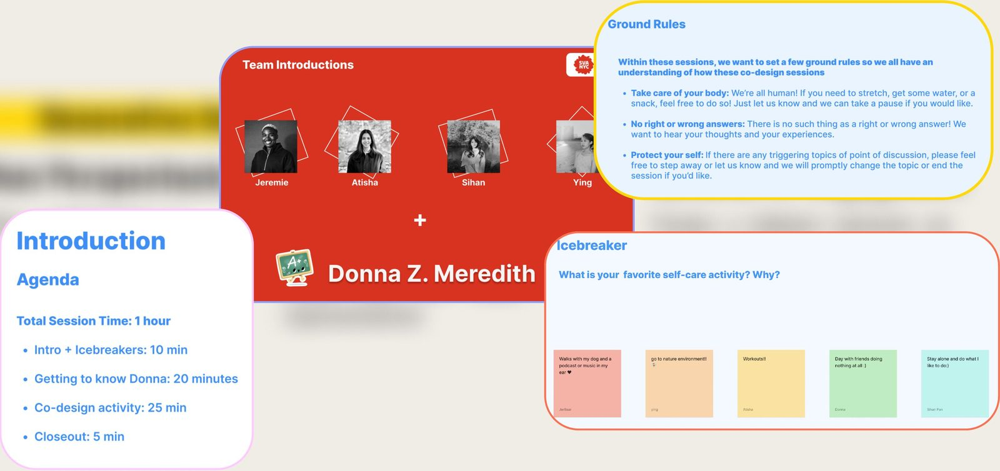
03One-hour sessions: ground rules, an icebreaker on self-care, then the activity.
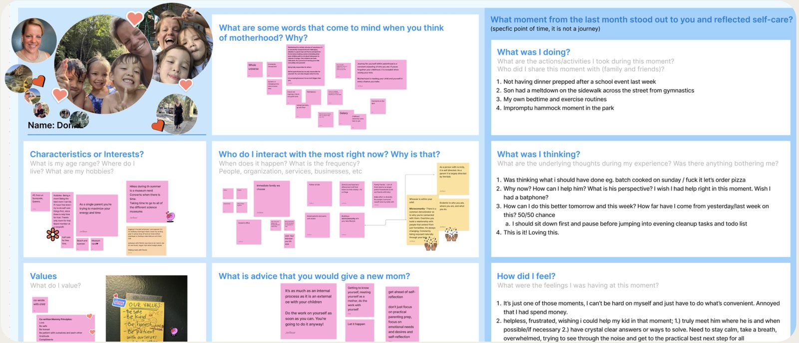
Mom PerspectacleDonna’s board: words for motherhood, her values, advice for a new mom, and one moment from last month.
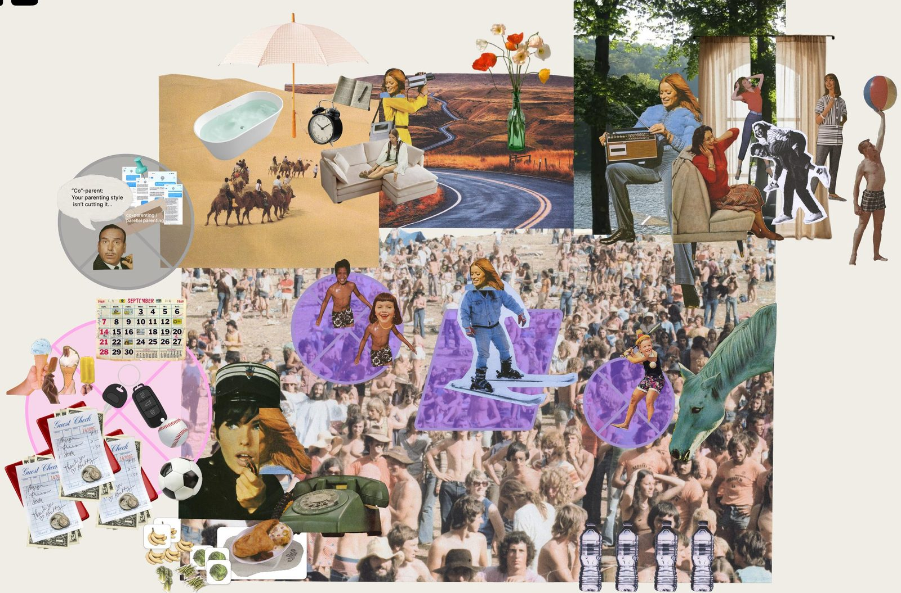
CollageAnswering “What helps me feel okay, even on hard days?” in pictures.
What we heard → the principle it became
Hover a principle to hear where it came from.Tap a principle to hear where it came from.
The pivot
Design for where support can be proactive.
Donna told us the hardest part was not the birth. It was how those first months kept echoing years later, in how she showed up as a mom, a partner and herself. Postpartum care has long rested on one checkup around six weeks after birth, and obstetricians have pushed for earlier, ongoing contact since 2018. A 2023 review of 27 studies found loneliness at the center of perinatal depression.
So we moved earlier, from single moms to the perinatal stage, and from support to prevention. Then we checked back with Donna and Ruei: the three principles still held.
What we learned from moms and experts
After the pivot we co-designed with perinatal moms and brought in two experts, to learn how community and its knowledge support moms in this stage.
Perinatal moms
What they live with
Judged, overwhelmed, time-poor, often alone. They value shared experience.
Expert
Columbia, Center for the Transition to Parenthood
Tiny, embodied practices over big one-time fixes.
Expert
Seleni Institute
Formal care can’t hold everything. Community and realistic tools matter.
HOW MIGHT WE Turn an ordinary tea ritual into a connected, preventative support system?
From isolation
Lonely micro-moments become moments of connection.
From overwhelm
Apps and communities that feel info-heavy become a stress-free, low-cost way in.
From no ritual
A simple act becomes a routine for self-care, shared with moms who know this transition.
After the pivot: a usability test of the digital concept with moms [confirm: how many moms tested].
Three ways to connect.
The kit, the coaster and the app work as one. Each flow carries one principle into the product.
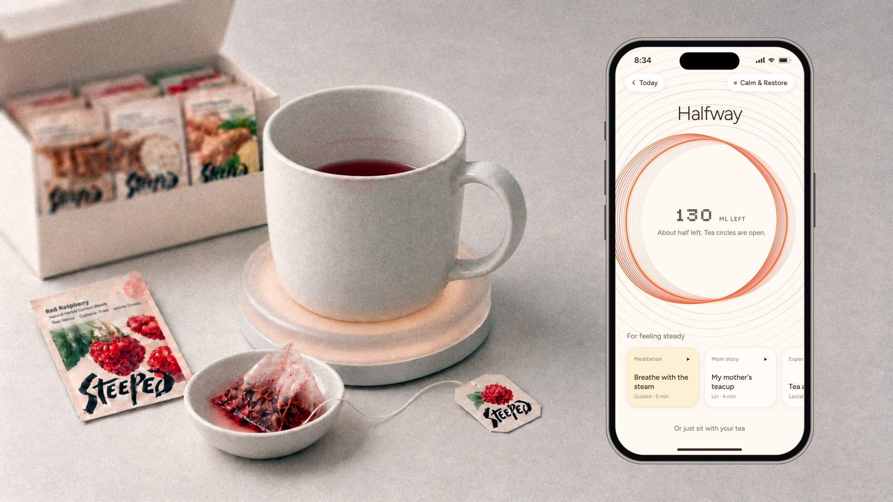
The decision everything hangs on. The app can’t know when she finishes her tea, but the coaster can weigh what is left. So progress is tea left, never time. Each cup moves through five phases: Steeping, First sips, Halfway, Last sips, Finished.
01
Connect to self: check in, then the cup leads.
One gentle check-in when the cup lands. From then on, every sip changes the screen: the ring drains with her tea, and what she can open grows and then winds down.
Stay with the rhythm · It begins in a pause she already takes, when the cup lands, never on a schedule.
→
→
02
Connect to community: find a circle, sit together.
At halfway, Tea circles open. She sees how many moms are sipping, picks a room, and joins. Inside, the ring on each face is the tea left in that mom’s cup. Holding a face shows how she is doing today, and reactions float up without anyone having to speak.
Hold space for self-love · She can be seen by moms who get it, with no pressure to talk and nothing to keep up.
→
03
Notice your weeks: Rhythm, built from tea alone.
Rhythm reads only what she already gives: her cups, the teas she chose, the hour her cup usually lands, the pauses, and the mood she picked at check-in. It notices her weeks without scoring them. Every tea is caffeine free and matched to her stage with a midwife and experienced moms, and each one says to ask her midwife if unsure.
Honor wholeness · Her weeks show up as a pattern of her own, with no score attached.
A week of cups and moods, one column a day
Her tea window, the time her cup usually lands
How she has been over four weeks, and the circles she sat in
What we tested, and what is still open.
We ran a usability test of the digital concept with [N] moms. The coaster is a prototype in progress, so nothing here comes from use over time.
What I’d change, and what I learned.
Pregnancy and postpartum are different nights. The screens follow pregnancy week by week. The weeks after the baby arrives need their own version, with different hours and different needs.
Belonging needs care. Research on perinatal loneliness found that peers help only when their experience matches, and moms who seem to be doing well can deepen it. So Tea circles need moderation to stay honest, and that design is still open.
Safety comes before features. Teas stay caffeine free, chosen with a midwife, and never promise a benefit. Next is a quiet way to reach real help, which matters more than any new screen.
What I’m taking with me. Designing for less attention is still designing. Knowing when to step back is part of the product.
Decision Trail
On a long project with AI, Decision Trail keeps you steering: you know what you decided, why, and where you are on the roadmap, in every new chat.
In progress · round 2 tests next
✓Decision TrailAI Product Concept for Claude · Self-initiated
Know where you are. Steer where it goes.
Decision Trail is a concept for Claude, for anyone working with AI on a long project across many chats. It helps people navigate their own decisions and steer the progress, so the authority over the work stays with them and they always know where they are on the roadmap. You mark decisions in your own words. Each one links back to the moment you made it, carries into the next chat, and keeps Claude’s plans honest.
Role
Product Designer · Solo
1 real usability session so far · a month of my own decision log
Research
Interaction design
Prototype
Usability test
Skills
Research
Desk research
Usability testing
Auto-ethnography
Design
Conversation design
Interaction design
Build
Prototyping in code
Self-paced test harness
A month in, the plan forgets what you decided.
A month into producing a Fashion Week pop-up, you ask Claude for the promotion plan. Step 1 sends gifting bags to 30 influencers, the opposite of what you decided on Oct 24. The next morning, in a new chat, you explain everything again.
Mark it in your words
After you send a message that reads like a decision, a quiet prompt offers to add it. Nothing saves until you tap.
Claude checks its plans
When a plan conflicts with a call you made, Claude says so inside its reply and asks: keep it, or change it?
Find the why, anytime
Every decision links back to the moment you made it, one tap away.
The output grows. The sense of steering fades.
In long AI work, people make dozens of calls across many chats. Later, few can say what they decided or why. As the output keeps growing, their sense of authorship fades, and with it their confidence to steer.
HOW MIGHT WE Help people keep their decisions, and the reasons behind them, in view, so they can steer AI work that spans days and chats?
Drift
The model weighs some information more than the rest, and the project bends toward those weights a little at a time.
Approvals without reasons
Small calls get handed to the AI to keep moving. When one turns out wrong, more work already sits on top of it.
A lost thread
Side paths open constantly, and nothing shows whether today’s call still serves the goal.
What exists today
Every major assistant now remembers across sessions. In each, the AI decides what to keep, and saved items carry no link back to the chat they came from. In one study of ChatGPT memory, 96% of saved entries were written by the system (arXiv, 2026). Heavy users fill the gap with handoff notes and decision logs in outside files.
Product
Who writes the record
Links back to the moment
Claude memory
Mostly Claude
No
ChatGPT memory
The AI
No
Gemini saved info
User or AI
No
TrailMark (Slack, no AI)
The user
Yes
A decision is a thread, and its reversals matter most.
Before designing the list, I went back through a month of my own decision log: 36 entries across 9 projects. One direction had been revised four times. So every surface shows the current version on top, with earlier versions kept and marked replaced.
Keep the pen in their hand
Decisions are saved in the person’s own words.
Keep the map at their feet
What they decided, what Claude did since, and what’s still open stay one glance away.
Move with their stride
Recording happens at natural moments; the record waits until they reach for it.
The rule that follows: Claude may suggest; only you record. Progress, which Claude already shows, logs what Claude did. Decisions holds what you decided.
Mark, check, find your place.
Try it: add your decision, open Claude’s side of it, then start a new chat and ask where you are.
Fashion Week pop-upNov 1
Two venues fit the budget. The Chinatown gallery has the stronger story; SoHo has more foot traffic.
Go with the Chinatown gallery. It fits the brand’s story and leaves money for the build-out.
Add this to Decisions?
Decisions
No influencer gifting bags.Oct 24
Full dot: you raised it. Half dot: Claude suggested it, you decided.
Who proposed it
Claude suggested the gallery a minute before you chose it, so the entry gets a half dot. Your words stay the decision; Claude’s reason folds underneath, quoted whole.
Drift check
When a plan would break a call you made, Claude quotes it inside its normal reply and asks. Change it, and the old call stays, struck through.
Reflect
When the same kind of call keeps coming up, Reflect drafts a skill from it, each rule linked to the quotes it came from.
What the first real test said.
On Nov 5 I ran the first session with a real person: a creative producer who runs fashion shows and pop-ups. He picked the creative track and played himself. I moderated in person. With one participant, this shows where to look next.
3 → 6
How sure he is today that he knows what he decided across AI chats, out of 7, and how sure he imagines he’d be with this.
The moment he decided
What stood out most: jumping back to it, “helpful for keeping up with earlier decisions” across a long planning event.
Today: ask for a recap
“It may be wrong, easily mixed together.”
What challenged the design
What he said
What I’m exploring next
Most of his decisions are made in meetings, with other people. “After a meeting, I still have to go back and report to my AI what happened.” (translated)
Decisions made with others: paste meeting notes, Claude offers the mark on the calls in them, and you record the ones that matter, with who decided.
A pick-up card that opens by itself “assumes you know nothing.” (translated) He wanted to ask where he is himself.
“Where am I?” on demand: a new chat opens clean, and asking shows what’s done, what’s left, and what changed.
“I will never look at this during production.” (translated) He saw Reflect as a retrospective.
Reflect as an end-of-project review.
His 6 is imagined, not measured. Simulated sessions were used only to debug the flow and carry no weight as evidence.
What’s next.
The concept bets that rebuilding context costs people enough to matter, and that they’ll mark decisions as they go. One session settles neither. Next: five to six more self-paced sessions across tracks, each participant playing their own kind of work. If fewer than 1 in 5 decision-like messages get marked, recording needs to get lighter.
What I’d ship first: the drift check. It’s the moment the record pays off, and it works with a handful of decisions.
Concept and research by me, using Claude as the product it extends. Not affiliated with Anthropic.
MisCast
Ask two AIs to discuss therapy and you get a podcast nobody asked for. Put them inside a therapy session and you get a scene.
Draft · copy and images in progress
MCMisCastMulti-Agent AI Entertainment · Self-initiated
Cast two AI characters into one scene, and watch them improvise.
I designed and built MisCast over six months, from the first prototype to a live web app. You pick two characters and a scene, like a sweet grandma playing therapist to an awkward tech CEO, and they play it out. You’re the audience, not the user. Your part comes after the scene: react, throw in a plot twist, or share it.
Role
Designer & Builder
6 months · 1 person · live web app
Concept
Prompt design
Visual system
Live build
Skills
Design
Interaction design
Spectator UX
UI & visual system
AI
Prompt architecture
Multi-agent scenes
Character design
Build
Lovable
Claude Code
React / Supabase
The situation creates the stakes, not the subject.
MisCast casts two AI characters into one fixed scene and lets them improvise. The fun is the mismatch: wrong people, wrong scene.
You cast, then you watch
Agency moves to after the scene: react, add a twist, share the show.
Characters stay themselves
Each keeps their voice instead of dissolving into the role they’re handed.
Built, not mocked
Six months of work, running as a live web app.
Cover loop · director calls the scene, two characters play a first date
The first build worked, and it was boring.
AI chat today is something you operate: you type, it answers. Watching AI is a different need, closer to improv than to a tool, and almost nothing is designed for it. [confirm: one line of evidence for the need today, e.g. a trend or a number]
My first version had two AIs debate a topic. It felt like two ChatGPTs being politely reasonable: no stakes, no mismatch, nothing worth sharing.
HOW MIGHT WE Make an AI experience people want to watch, not just operate?
As a topic
As a scene
“Discuss therapy.”
“You’re in a therapy session, and you’re the patient.”
Both speakers are equals with opinions.
The roles are unequal, which creates friction.
It can stop at any point without loss.
It has beats, so there is a reason to stay.
What building taught me about the model
01
Situations beat topics
The same model behaves very differently once it’s placed inside a situation.
02
Identity goes first
Character identity has to sit early in the prompt, or the role overwrites it.
03
The metaphor has to be real
Two visual systems failed because they were only pleasant. Theatre had to be taken seriously.
This project has no user research. Its evidence is six months of building, so read the confidence accordingly.
Give every character a one-line bridge.
At scene start, each character hears who they are before what they play: “You’re Alice, and you’re playing the therapist. But you’re not a real therapist, so you’d do this your way.” The character keeps their voice, and the role supplies the stakes.
Layer
Weight
Job
Character identity
~40%
What survives any role.
Role briefing
~25%
What they play in this scene.
Stage direction
~20%
How to behave as a performer.
Scene context
~15%
Where they are.
Scene screens · cast → live scene → plot twist → share
The visual system took three tries. Orange-friendly read as a productivity tool. Rounded pastel read as a consumer app. Black-and-white theatre, with a playbill and a curtain, took the metaphor seriously and stayed.
Visual system · three iterations side by side
An entertainment product, judged as one.
There is a live app and no audience data yet, so this is a projection, not a finding. Entertainment has one honest distribution channel: someone sending it to someone else. The scene is already the unit, so the share is the surface worth building around.
What would have to be true
People share a scene after watching it.
The second scene is as good as the first.
Five templates support enough repeat play.
Inference cost per scene stays below what a viewer is worth.
Characters stay in voice often enough that a bad scene is rare.
What six months of building with AI taught me.
The frame is the design work. The same model produces very different output when the framing shifts.
Take the metaphor seriously or drop it. Pleasant visuals were not enough; theatre had to feel like theatre.
Busy is not the same as building. Thinking out loud with AI sharpened my own thinking. Slow is smooth, and smooth is fast.
Next. Put scenes in front of an audience and measure the one thing that matters for entertainment: whether they send it to someone.